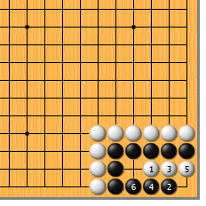
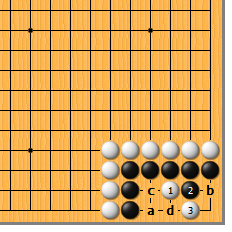
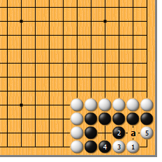
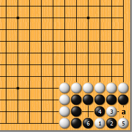

|  |  | |
| 图1 此型黑没有太大的问题。白1点是急所，黑2不得不跳，白3冲，黑4渡，白5黑6成白先手双活，此为正解。黑4如5位渡，被白4拐成万年劫。
| 图2 白1时，黑2如挡就有麻烦了。白3扳，以后可先a位尖再b位扑，成劫。黑如抢先于c位打，白d位粘后仍有b位扑劫的余地。 | |
|  |  | |
| 图3 白1也算急所。黑当然只好2位应，白3至白5，成双活。不过此图白落后手，不算正解。（站长是不是过分严厉了？）黑2如a位顶，白2位扳还原至前图。 | 图4 白1点不是急所。黑2靠，白3挖打时，黑4反打为最佳应手。至黑6，黑活。黑2如于4位顶，以下白2，黑6，白a，成双活。
| |
您的高见 | ||
图5 白1点也不是急所。黑2至黑4，白无后续手段，连双活也不是。 |